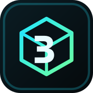

Ste offline / You are offline
Rozhranie aplikácie môže fungovať z lokálnej pamäte, ale synchronizácia s Google cloudom potrebuje internet.
The app interface can work from local storage, but Google cloud synchronization requires an internet connection.